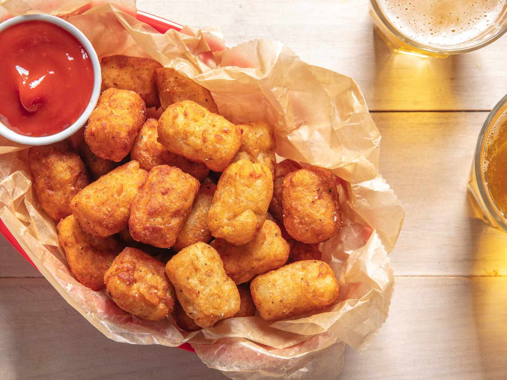

TATERTOTS

INGREDIENTS
- 4 large potatoes, peeled and grated
- 1/4 cup all-purpose flour
- 1 teaspoon salt
- 1/2 teaspoon garlic powder
- 1/2 teaspoon onion powder
- 1/4 teaspoon black pepper
- 1 egg, beaten
- Oil for frying
INSTRUCTIONS
- Grate the peeled potatoes using a grater or food processor.
- Place the grated potatoes in a cheesecloth or paper towel and squeeze out as much moisture as possible.
- In a large bowl, mix together the grated potatoes, flour, salt, garlic powder, onion powder, and black pepper.
- Add the beaten egg to the potato mixture and stir until well combined.
- Heat about 1 inch of oil in a deep skillet or frying pan over medium-high heat.
- Using a tablespoon or small ice cream scoop, drop spoonfuls of the potato mixture into the hot oil. Cook until golden brown, flipping occasionally to ensure even cooking, about 3-4 minutes.
- Remove the tater tots from the oil and place them on a paper towel-lined plate to drain off any excess oil.
- Serve the tater tots hot with ketchup or your favorite dipping sauce.